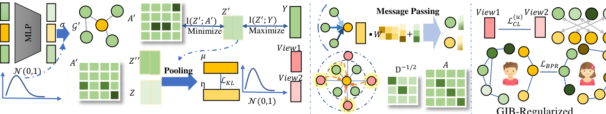

Graph Augmentation for Recommendation (面向推荐的图增强框架)
- 会议/期刊: ICDE 2024
- 作者与机构: Qianru Zhang, Lianghao Xia, Xuheng Cai, Siu-Ming Yiu, Chao Huang (香港大学), Christian S. Jensen (奥尔堡大学)
- 推荐链路定位: 召回（图协同过滤表征学习）
- 研究方向: 自监督对比学习与交互去噪 / 图神经网络推荐
- 论文原文: https://arxiv.org/abs/2403.16656v1
- 开源代码: https://github.com/HKUDS/GraphAug
TL;DR (1分钟核心速览)
现有图对比学习（GCL）推荐把「随机删边/加噪」当作增强，却把误点击、流行度偏置等交互噪声一并放大成自监督信号；同时非自适应的 GCN 消息传递加剧过平滑。GraphAug 把增强器变成可学习的去噪模块：以 GIB（图信息瓶颈）目标驱动 Gumbel 重参数化边采样，自动蒸馏任务相关信息并生成两个去噪视图，再用 Mixhop 混阶编码器抑制过平滑。在 Gowalla / Retail Rocket / Amazon 上，Full/Sampled 排序评测的 Recall@20 分别达 0.2025 / 0.1463 / 0.2019，较最强基线 NCL 相对提升 8.6% / 5.9% / 5.9%。
Background & Motivation (背景与核心矛盾)
- 主流范式: SGL/SLRec 用随机 DropEdge、NodeDrop 造两个视图做 InfoNCE 对齐；HCCF 用超边聚合、NCL 用 EM 聚类构造「局部-全局」视图对比。
- 前人局限一: 随机扰动对长尾物品极不友好——关键交互模式被删掉后，增强视图本身就是噪声，InfoNCE 的 instance discrimination 反而把噪声"钉"进表征。
- 前人局限二: 手工设计的聚合器（超边/聚类中心）依赖特定 pretext task，且聚类易偏向高度数节点，噪声输入下自监督方向被带偏；GCN 逐层平滑使节点表征趋同。
- 核心洞察 (Key Insight): 增强不该是"加噪"，而应是"信息压缩"——只保留与推荐标签 \(Y\)互信息高的结构成分，把与输入图\(A\) 的冗余互信息压掉，天然对齐 GIB 的 sufficiency/minimality 折中。
- 本文切入点: 让增强算子 \(Aug(G)\) 本身可学习并由 GIB 目标监督，采样过程用重参数化保证可微；编码端用 Mixhop 混合多阶邻域以对抗过平滑。
Method (核心方法设计)
1. 整体框架 (Overall Architecture)
输入用户-物品二部图 \(\mathbf{A}\)，先用 Mixhop 编码器得到高阶嵌入\(\bar{\mathbf{H}}=GE(\mathbf{H}^0)\)；可学习增强器以节点嵌入对为输入打分得到边存在概率，再经 Gumbel 重参数化 + 阈值\(\xi\)二值化为两个独立采样视图\(G'=(U\cup V,\mathbf{A}')\)、\(G''\)；两视图经同一 Mixhop 编码器得到\(\mathbf{Z}',\mathbf{Z}''\)，一方面对\(\{Z,Z',Z''\}\)做 pooling 得高斯后验\((\mu,\eta)\)以计算 GIB 上界（KL 项），另一方面做 InfoNCE 视图对齐；最终与 BPR 主损失联合优化，推理时仅用原图\(\mathbf{A}\) 编码一次再做内积打分，不引入额外在线开销。
flowchart TD
A["用户-物品交互图 A + ID 嵌入 H0"] --> B["Mixhop 编码器 (M={0,1,2})"]
B --> C["可学习增强器 p((u,v)|H) + Gumbel 重参数化采样"]
C --> D["去噪视图 G′ / G″"]
D --> E["Mixhop 编码 Z′ / Z″"]
E --> F["GIB 正则 (KL 上界) + InfoNCE 对比"]
F --> G["BPR 打分 ŷ=BPR+β1·GIB+β2·CL"]
2. 关键设计拆解 (Key Designs)
-
可学习增强器与重参数化边采样：痛点是把"删边"当增强会误删长尾信号。改为让每条边有可学习的保留概率：先对嵌入加噪与 mask 扰动 \(\tilde{\boldsymbol{h}}_u=(\bar{\boldsymbol{h}}_u-\epsilon_u)\cdot m_u+\epsilon_u\)，再以\(\sigma(\mathrm{MLP}([\tilde{\boldsymbol{h}}_u\|\tilde{\boldsymbol{h}}_v]))\) 建模边概率；采样用 soft-Bernoulli 形式的 Gumbel 重参数化 \(\bar{a}'_{u,v}=\sigma\!\left(\tfrac{1}{\tau_1}\left(\log\tfrac{p}{1-p}+\log\tfrac{\epsilon'}{1-\epsilon'}\right)\right),\ a'_{u,v}=\bar{a}'_{u,v}\,\mathbb{I}(\bar{a}'_{u,v}>\xi)\)， 使离散图采样可反向传播；直觉是"低相似度边被概率性剔除、潜在高阶边被补回"，即一次端到端去噪。
-
GIB 增强目标的可算化：直接优化 \(\mathcal{L}_{GIB}=-\mathrm{I}(Z';Y)+\beta\,\mathrm{I}(Z';A)\)不可解，作者分别取\(\mathrm{I}(Z';Y)\)的变分下界（用\(-\log q(Y|Z')\)近似）与\(\mathrm{I}(Z';A)\) 的高斯上界（KL 散度），得到 \(\mathcal{L}_{KL}=\tfrac{1}{N}\sum_n\left[-\log q(Y_n|Z')+\beta\,p(Z'|A_n)\log\tfrac{p(Z'|A_n)}{r(Z')}\right]\)， 其中 \((\mu,\eta)=\mathrm{Pooling}(\{Z',Z'',Z\})\)给出\(p(Z'|A_n)=\mathcal{N}(\mu,\eta)\)，并以\(\beta\) 控制压缩强度。物理意义：视图被压向同一高斯先验，噪声边带来的方差被惩罚，任务相关信息被保留。
-
Mixhop 混阶传播、损失与开销：为解过平滑，编码器不做单一邻接幂，而是拼接多阶： \(\boldsymbol{h}'^{(l+1)}_u=\big\|_{m\in\mathcal{M}}\delta\!\left(\sum_{\tilde{a}'^m_{u,v}\neq 0}\tilde{a}'^{m}_{u,v}\mathbf{W}^{(l)}_m\boldsymbol{h}'^{(l)}_v\right),\ \mathcal{M}=\{0,1,2\}\)。 总损失 \(\mathcal{L}=\mathcal{L}_{BPR}+\beta_1\mathcal{L}_{GIB}+\beta_2\mathcal{L}_{CL}+\beta_3\|\Theta\|_F^2\)；对比负采样为批内随机负样本（比例\(r\)），BPR 用均匀采样负例。复杂度\(O(M_{max}L|\tilde{A}|d)+O(B(I+J)d)\)，与 LightGCN 同量级；\(\tilde{A}^mH\) 用连乘递推避免显式高阶矩阵。
Experimental Setup & Evaluation Protocol (实验设置与评估协议)
- 数据集与预处理:
| 数据集 | #Users | #Items | #Interactions | 密度 | 场景 |
|---|---|---|---|---|---|
| Gowalla | 50,821 | 57,440 | 1,172,425 | 4.0e-4 | 签到 POI |
| Retail Rocket | 49,611 | 20,994 | 169,909 | 1.6e-4 | 电商点击/加购/交易 |
| Amazon | 56,027 | 29,525 | 256,036 | 1.5e-4 | 商品评分 |
- 数据划分与防穿越: 论文正文未显式声明过滤/划分细节；按其 HKUDS 开源管线与同类工作（SGL/NCL/AutoCF）惯例为
5-core过滤 +Leave-One-Out（每用户最后 1 次交互作测试）。此处属推断，复现需以仓库配置为准。 - 排名评测协议: 沿用该系列的
Sampled Ranking（每用户 1 正 + 99 随机负，指标 Recall@20/40、NDCG@20/40），非 Full-Ranking；因此绝对值偏高，跨论文比较需注意口径。 - 对比基线与超参: 五类基线——传统 CF（BiasMF/NCF/AutoR）、GNN（GCMC/PinSage/NGCF/LightGCN/GCCF）、解耦（DGCF/DisenGCN）、生成式 SSL（MHCN/STGCN）、对比 SSL（SGL/SLRec/HCCF/NCL/DGCL/CGI）。\(d\)搜索 [8,16,32,64]（主表用 32），学习率 0.001，\(\tau\in[0.1,0.9]\)，\(\xi\in[0,0.8]\)，\(\beta_1\in[1e\!-\!6,1e\!-\!3]\)；报告\(p\)-value（多为\(10^{-6}\sim10^{-8}\) 量级）。
Key Experimental Results (实验关键数据)
1. 主实验对比 (Main Results)
| 模型 | Gowalla R@20 | Gowalla N@20 | Retail R@20 | Retail N@20 | Amazon R@20 | Amazon N@20 |
|---|---|---|---|---|---|---|
| NCF | 0.1247 | 0.0659 | 0.0812 | 0.0456 | 0.1032 | 0.0453 |
| LightGCN | 0.1799 | 0.1053 | 0.1279 | 0.0708 | 0.1775 | 0.1087 |
| SLRec | 0.1529 | 0.0926 | 0.1268 | 0.0732 | 0.1679 | 0.1045 |
| SGL | 0.1814 | 0.1065 | 0.1376 | 0.0785 | 0.1856 | 0.1033 |
| DGCL | 0.1793 | 0.1067 | 0.1243 | 0.0781 | 0.1675 | 0.0986 |
| HCCF | 0.1818 | 0.1061 | 0.1309 | 0.0576 | 0.1803 | 0.0987 |
| NCL | 0.1865 | 0.1111 | 0.1382 | 0.0813 | 0.1907 | 0.1081 |
| GraphAug | 0.2025 | 0.1228 | 0.1463 | 0.0860 | 0.2019 | 0.1287 |
| Improv. vs NCL | +8.58% | +10.53% | +5.86% | +5.78% | +5.87% | +19.06% |
2. 消融实验 (Ablation Study)
| 变体 | Gowalla R@20 | Gowalla N@20 | MAD（越大越过平滑越轻） |
|---|---|---|---|
| GraphAug 完整 | 0.2025 | 0.1228 | 0.7215 |
| w/o Mixhop（退化 GCN） | 0.1833 | 0.1172 | 0.5783 |
| w/o GIB（仅随机对比增强） | 图 2 显著下降（未给数值） | 同左 | — |
| w/o CL（无对比、仅 BPR） | 图 2 下降最大 | 同左 | — |
| 增强比例 ξ（Gowalla） | 0.0 | 0.2 | 0.4 | 0.6 | 0.8 |
|---|---|---|---|---|---|
| Recall@20 | 0.1757 | 0.2025 | 0.1975 | 0.1764 | 0.1878 |
3. 关键实验发现 (Key Findings)
- 去噪比"更强增强"更重要：增强比例 0.2 时最优（0.2025），到 0.6 反而跌到 0.1764（低于完全不增强的 0.1757 附近），说明过度扰动会摧毁协同关系；而 Mixhop 被移除后 NDCG@20 掉 4.6%、MAD 从 0.7215 掉到 0.5783，直接证明混阶传播是抗过平滑的来源。
- 极端稀疏场景增益最大：Retail Rocket 密度仅 1.6e-4，GraphAug 相对 NCL 的 Recall@20 增益仍达 5.9% 且 NDCG@20 反超幅度稳定；在最长尾的物品分桶（交互 0–10 组）Recall@40 为 0.0472 vs NCL 0.0450，而在高频桶（40–50）扩大到 0.3000 vs 0.2170（+38%），说明去噪视图放大了有效协同信号。
- 抗噪更稳但训练更贵：人为注入 5%–25% 假边时，GraphAug 的 Recall 相对跌幅最小（图 3），优于 NCL/LightGCN；代价是 Gowalla 训练耗时 88.8 分钟，高于 NCL 的 56.8 与 DGCL 的 72.3（低于 HCCF 的 116.7），精度/开销 trade-off 需按场景权衡。
Highlights & Limitations (亮点、对比与审稿批判)
- 与代表作对比 (vs. Prior Work): SGL/SLRec 的增强是"无参数随机扰动"，不知道哪条边该删；HCCF/NCL 靠超边或 EM 聚类引入全局视图，但聚类中心被高度数节点绑架。GraphAug 的核心差异是把增强器参数化并纳入 GIB 目标，等价于"学一个带信息约束的图结构重写器"，同时用 Mixhop 把过平滑从架构层解决，而 NCL 只是靠对比损失间接缓解。
- 可迁移亮点: (1) Gumbel soft-Bernoulli + 阈值化的可微图采样可直接用于邻居剪枝、序列去噪、KG 边筛选；(2) 用 \(\mathcal{N}(\mu,\eta)\)逼近\(p(Z'|A)\) 使 GIB 落地，是把信息瓶颈接到任意对比推荐框架的通用模板。
- 审稿级局限批判: ① 评估口径偏弱——未明示过滤/划分细节，且为 99 负样本 Sampled Ranking，缺少 Full-Ranking 与方差/多次运行报告；② GIB 的池化高斯假设较强，\(\beta_1\)（1e-5 最优）与\(\xi\) 的敏感性意味着需要逐数据集调参，加之训练时间比 NCL 高约 56%，在工业亿级图上可扩展性存疑；③ 仅验证静态 CF，未覆盖序列、多模态或多行为场景。
Rating (四维评分)
- 方法创新性 (Novelty): ⭐⭐⭐⭐ （把 GIB 从表征正则升级为"增强器监督信号"，可微图采样与 Mixhop 的组合在 GCL4Rec 中属首次系统化）
- 评估协议与实验扎实度 (Protocol & Experiments): ⭐⭐⭐ （数据集与基线覆盖面广、含噪声/稀疏/收敛/耗时多维分析，但划分与负采样细节缺失、仅 Sampled Ranking）
- 写作与数学规范度 (Clarity & Rigor): ⭐⭐⭐⭐ （GIB 上下界推导与复杂度分析完整，符号基本一致；个别公式排版与 \(W^{(0)}_0\) 置零简化略显跳跃）
- 工业落地与复现价值 (Industrial & Practical Value): ⭐⭐⭐⭐ （代码开源、推理端零额外开销、可微采样插件化易接入，但训练开销与超参敏感度是上线前需压缩的点）